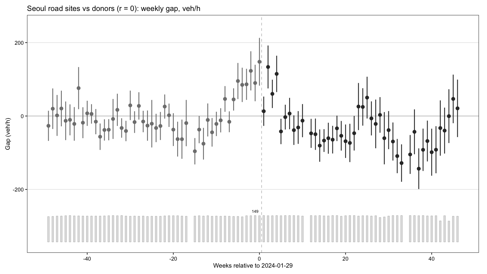
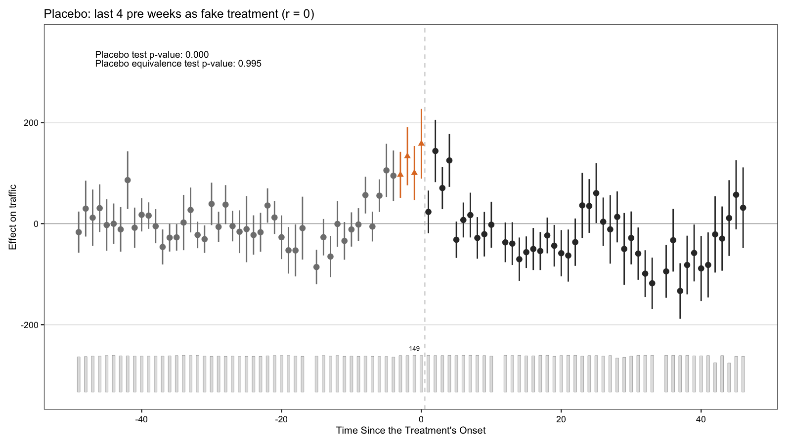
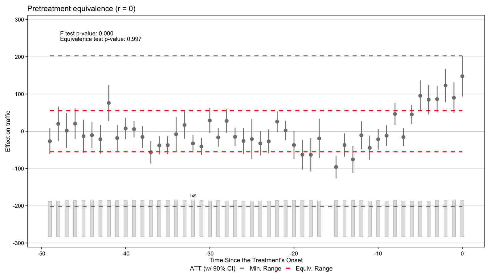

⑤ 서울 전역 도로: TOPIS 지점 gsynth⑤ Seoul-wide roads: gsynth on TOPIS sites
여의도 밖으로 범위를 넓혀, 주별 자료가 90% 이상 있는 서울 TOPIS 지점 149개를 처치 단위로, ③의 서울 밖 도너 53개를 비교 단위로 일반화 합성통제를 적용했습니다.Extending beyond Yeouido: 149 Seoul TOPIS sites with ≥ 90% weekly coverage are treated, with the 53 non-Seoul donor links from ③ as controls.
설계Design
- 결과변수: 평일(공휴일 제외) 06–09시 시간당 교통량, 일 중앙값 → 주 중앙값. 처치 51주, 사후 51–96주.Outcome: weekday non-holiday 06–09h hourly volume, daily median → weekly median. Treated from week 51; post weeks 51–96.
- 지점 유형: A 도심, B 시계, C 한강 교량, D 간선도로, F 도시고속도로. 여의도 연계 지점 표시.Site types: A downtown, B city boundary, C Han bridges, D arterials, F urban expressways; Yeouido-linked sites flagged.
- 요인 수는 CV로 선택(r = 0), r = 1–4는 민감도.Number of factors chosen by CV (r = 0); r = 1–4 as sensitivity.
결과Results
| 집단Group | n | CV (r=0) | r=1 | r=2 | r=3 | r=4 |
|---|---|---|---|---|---|---|
| 전체All sites | 149 | −1.37% | −2.15% | −1.51% | −1.51% | −0.65% |
| 여의도 지점 제외Excl. Yeouido sites | 138 | −1.25% | −2.03% | −1.31% | −1.31% | −0.50% |
| A 도심A downtown | 21 | −1.39% | −3.53% | −2.69% | −2.68% | +0.19% |
| B 시계B boundary | 31 | −1.27% | −1.79% | −0.87% | −0.88% | −0.46% |
| C 한강 교량C bridges | 39 | −1.20% | −1.82% | −1.99% | −1.98% | −1.07% |
| D 간선도로D arterials | 38 | −2.72% | −4.03% | −3.13% | −3.15% | −1.68% |
| F 도시고속도로F expressways | 20 | −0.44% | −0.81% | +0.28% | +0.28% | +0.35% |
출처Source: results/05_seoul_road_gsynth/seoul_road_effects.csv (pct = 100 × Σgap / Σcounterfactual)
진단 실패 — 기술적 결과로만 해석Diagnostics fail — descriptive only
사전 기간 위약 검정이 기각됩니다(r = 0: 위약 ATT 121.9, p < .001; r = 3: 49.8, p = .043). 유형별 분석에서도 대부분 진단을 통과하지 못했습니다(
사전 기간 위약 검정이 기각됩니다(r = 0: 위약 ATT 121.9, p < .001; r = 3: 49.8, p = .043). 유형별 분석에서도 대부분 진단을 통과하지 못했습니다(
bytype/*.csv의 diag_pass). 따라서 위 수치는 인과효과 추정치로 보지 않습니다.
The pre-period placebo test rejects (r = 0: placebo ATT 121.9, p < .001; r = 3: 49.8, p = .043), and most by-type fits fail diagnostics (diag_pass in bytype/*.csv). These numbers should not be read as causal estimates.
diag_placebo_r0.csv · diag_placebo_r3.csv · bytype/


유형별 그림 보기 →Figures by site type →
코드Code
code/05_seoul_road_gsynth/ — TOPIS·ITS 도로 패널 필요(재배포 조건 확인 중).needs the TOPIS/ITS road panel (licence pending).